2レベルグループ化ボックスチャート
2レベルグループ化ボックスチャート
サマリー
Originのボックスチャートは、応用して利用することが可能です。このチュートリアルでは、Originのインデックスデータから2レベルのグループ化ボックスチャートを作成する方法を示します。
- 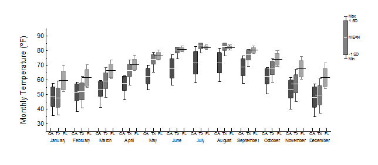
必要なOriginのバージョン: Origin 2015 SR0以降
学習する項目
このチュートリアルでは、以下の項目について説明します。
- データフィルタを使用してワークシートのデータを選択します。
- ボックスチャートの棒の積み上げ
- カテゴリー値のコントロール。
- インデックスデータからグループ化ボックスチャートを作成。
- ボックスチャートの編集
- ボックスチャートの軸の編集
- ボックスチャートにグラフを追加
データの準備
このチュートリアルでは、<Origin EXE Folder>\Samples\Tutorial Data.opjを使います。Tutorial Data.opjから、Two-Level Grouped Box Chart のフォルダを最初に開きます。
データフィルタを使用してワークシートデータを選択
次のステップでは、データフィルタを使用して分析したいデータを選択します。
- ワークブックUS Mean Temperatureをアクティブにして列Bを選択します。
- ワークシートデータツールバーからデータフィルタの追加/削除ボタン
 をクリックして、空のデータフィルタを列Bに追加します。
をクリックして、空のデータフィルタを列Bに追加します。
- 列Bの列ヘッダにあるフィルタアイコンをクリックして、Check Allのチェックボックスのチェックを外して、「CA, FL, TX」にチェックを入れます。
- OKをクリックして、フィルタを適用します。
- 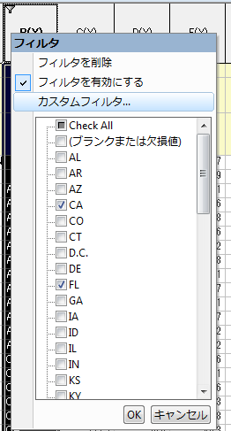
列をスタックして、データをインデックスモードに変換する
以下のステップで、データを行モードからインデックスモードに変換できます。
- 列Eから列P （JanuaryからDecemberまで）を選択して、メインメニューからワークシート: 列スタッキングを選択し、列スタッキングダイアログを開きます。
- 別の列を含めるのチェックボックスにチェックを入れてから、ワークシートから選択するボタンを押し、ワークシートの列Aと列Bを選択します。
- グループ列のロングネームを「Month」に、データ列のロングネームを「Temperature」に変更します。
- 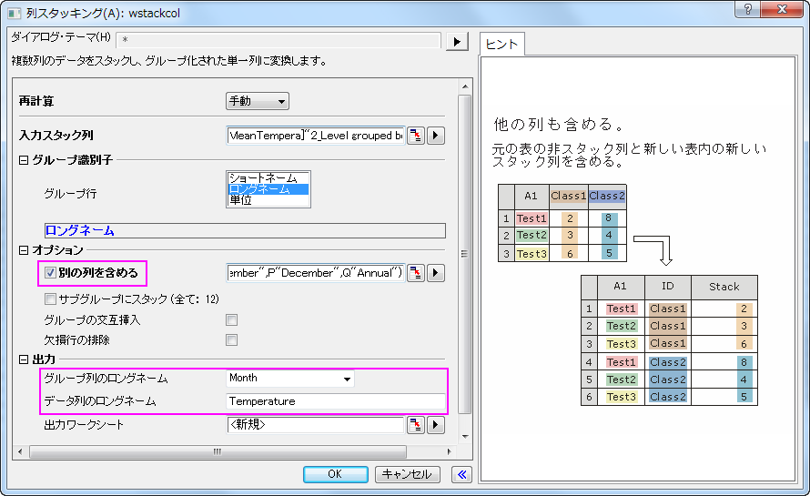
- OKをクリックして、新規ワークシートStackCols1を開きます。
- 列ヘッダのロックアイコンをクリックして、コンテキストメニューから再計算モード: しないを選択します。
- 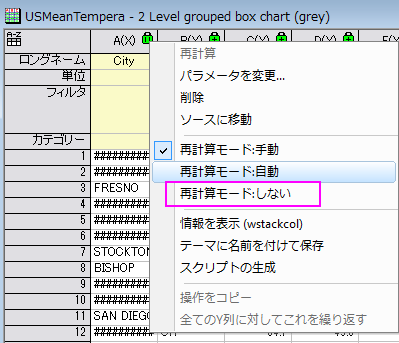
カテゴリー値のコントロール
以下のステップで、元データを変えずに、グラフに表示されている値の順番を変更します。
- ワークシートStackCols1の列Bを選択して右クリックし、カテゴリーとして設定を選択します。
- 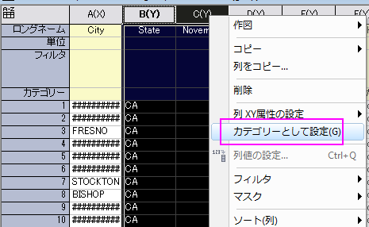
- 列Bのカテゴリーセル「ソートなし」をダブルクリックして、カテゴリーダイアログを開きます。
- <自動>のチェックボックスのチェックを外し、一番上へ移動ボタン
 , 上へ移動ボタン
, 上へ移動ボタン , 下へ移動ボタン
, 下へ移動ボタン , 一番下へ移動ボタン
, 一番下へ移動ボタン を使って、「CA-TX- F」の項目の順番を指定します。
を使って、「CA-TX- F」の項目の順番を指定します。
- 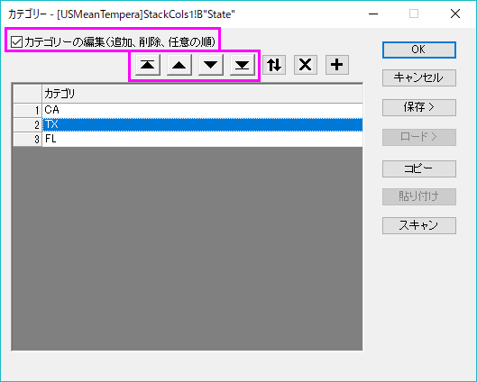
- 列Cでステップ2とステップ3を繰り返して、 「January 」から「December」の項目の順番を指定します。
インデックスデータからグループ化ボックスチャートを作成
- ワークシートStackCols1の列Dを選択して、メインメニューから作図：カテゴリカル：グループ化したボックスチャート – インデックスデータ...を選択します。
- Plotting: gboxindexedダイアログで、グループリストセクションの右上にある三角形のボタンをクリックして、コンテキストメニューから順番にC(Y): MonthとB(Y): Stateを選択します。
- 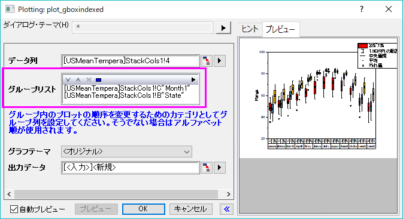
- OKをクリックすると2レベルのグループ化ボックスチャートが作成されます。
- 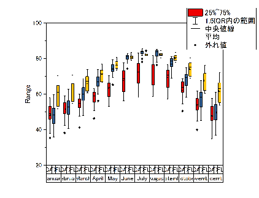
ボックスチャートの編集
- グラフレイヤを選択して（レイヤの中央より下の部分をクリックして）、コントロールハンドルをドラッグしてから好きなサイズに変更します。（コントロールハンドルにカーソルを置き、カーソルが上下2つの矢印になった時にドラッグします。）
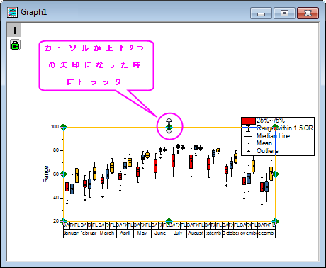
- フォーマット：ページをレイヤに合わせる…を選択してダイアログを開いてから、方向の調整ドロップダウンリストで幅のみ を選択して、内容領域のページ幅を調整します。
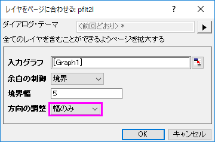
グラフは以下のようになります。
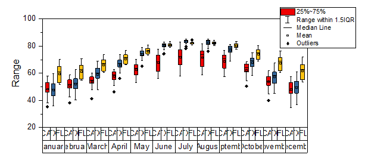
- ボックス上でダブルクリックして作図の詳細ダイアログを開き、グループタブを開きます。境界色とボックスの色について、推移を1つずつ、 サブグループをサブグループ内に設定すると、それぞれのサブグループが異なる色で表示されます。詳細セクションで色スケールをクリックして、 境界色とボックスの色の両方に、ドロップダウンリストにあるS01 Gray Scaleを指定します。
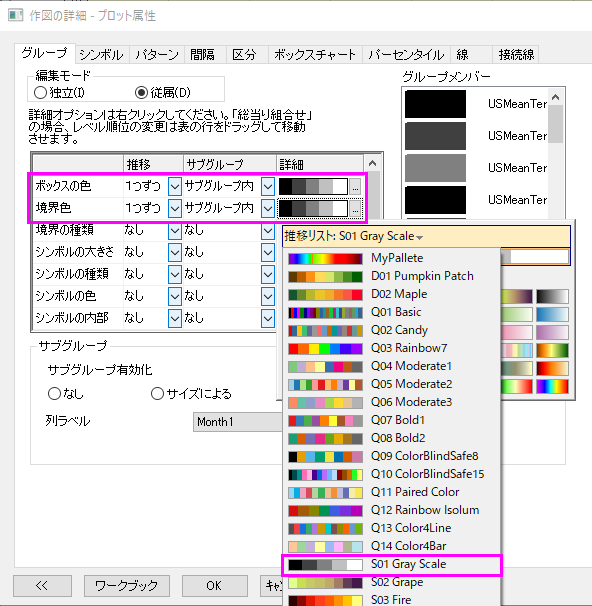
- パターンタブで線の透過率に準じるのチェックボックスのチェックを外して、透過率を30%に設定します。
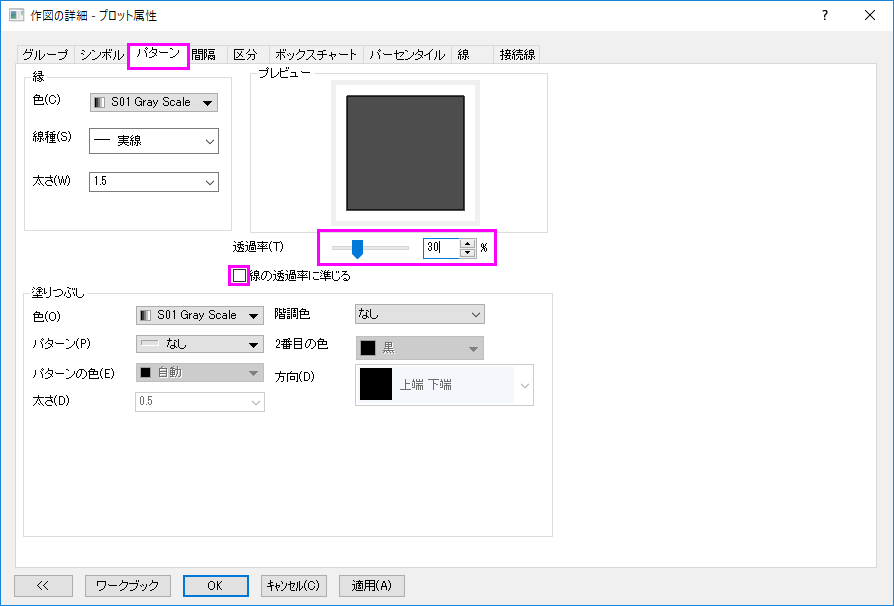
- 間隔タブで、「サブグループ間の間隔」と「サブグループ内の間隔」を設定します。
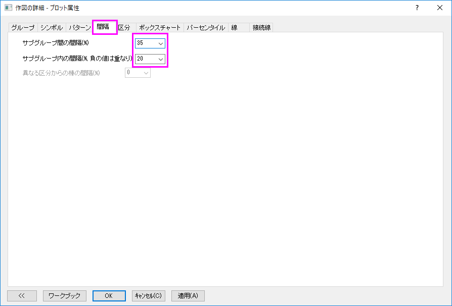
- ボックスチャートタブで、ボックスの範囲とヒゲを設定します。
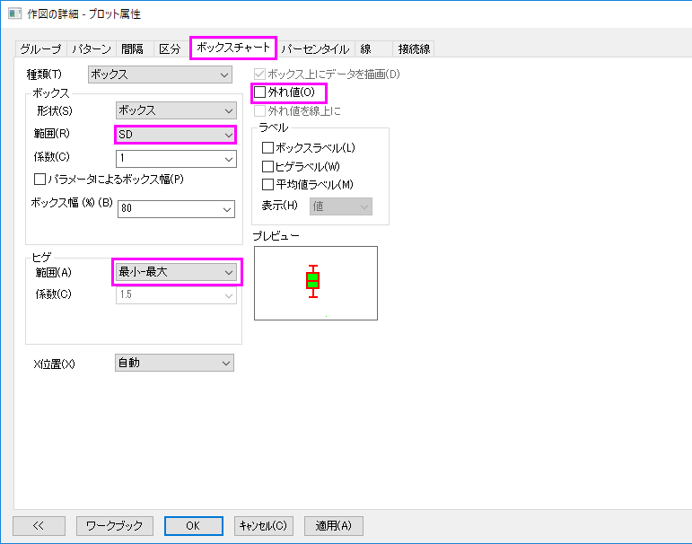
- パーセンタイルタブに移動し、99%、1%、Max、Minの前にあるチェックボックスからチェックを外し、 平均マーカーの形状とサイズを選択します。
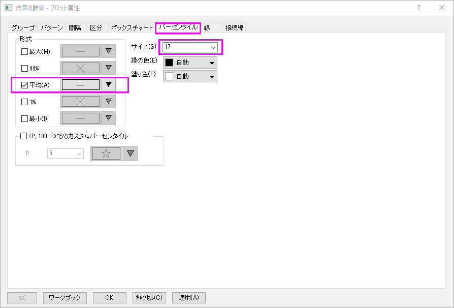
- 線タブでヒゲのキャップとカスタマイズして、中央値線のチェックボックスのチェックを外します。
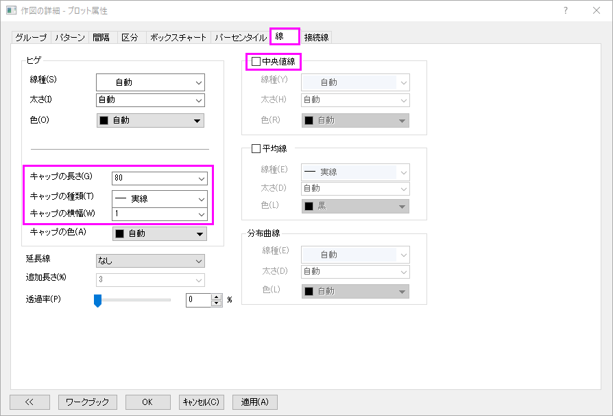
- OK をクリックして設定を保存します。
- グラフ凡例を右クリックして、コンテキストメニューから凡例：ボックスチャートの要素…を選択します。複式ボックス凡例：legendboxダイアログにて、ボックスIDのドロップダウンリストから状態を選択します。
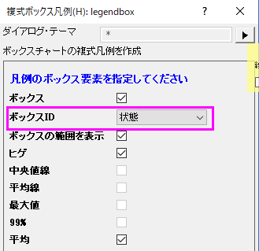
グラフは以下のようになります。
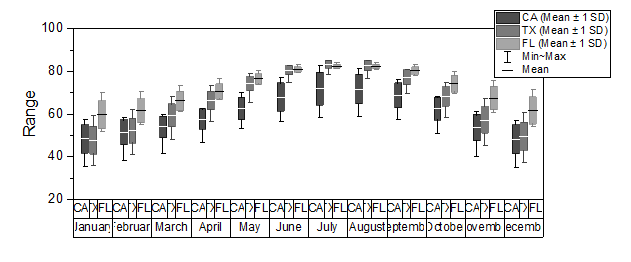
ボックスチャートの軸の編集
- X軸で、以下のステップを踏み変更を行います。
- Ｘ軸をダブルクリックして軸ダイアログを開きます。左パネルでは下１が選択されています。
- 目盛ラベルタブに移動し、フォーマットタブで下1 のフォントサイズを14にします。下の表タブに示している設定を繰り返します。
- 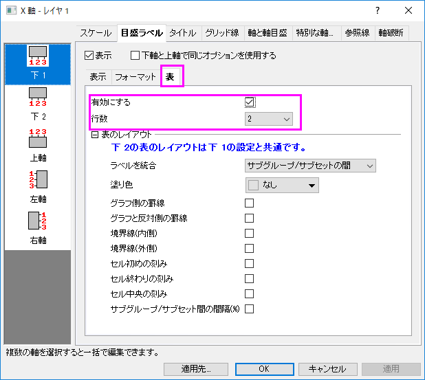
- 左パネルで下2を選択し、フォーマットタブで<自動>のチェックボックスからチェックを外して、下2のフォントサイズを11に変更します。また、表タブで以下に示している設定を繰り返します。
- 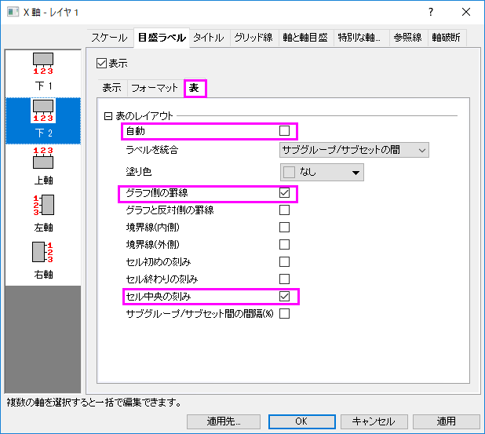
 | 表のレイアウトの内容は次の通りです。
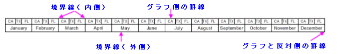
|
- 軸と軸目盛タブに移動し、主目盛のスタイルを内側にします。
- 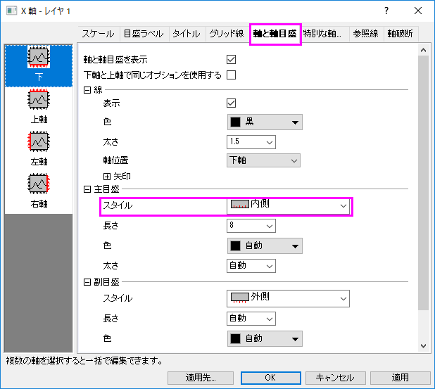
- Y軸に対して、次のタイトル、目盛ラベルのフォントサイズ、目盛りのスタイル を変更します。
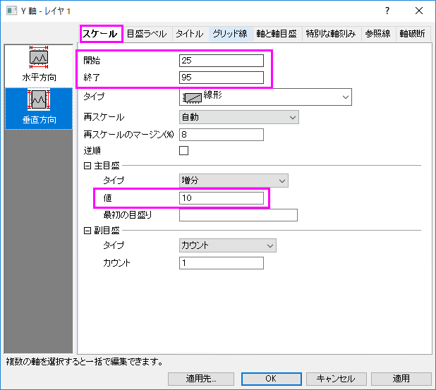
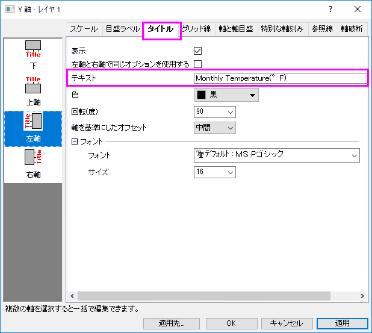
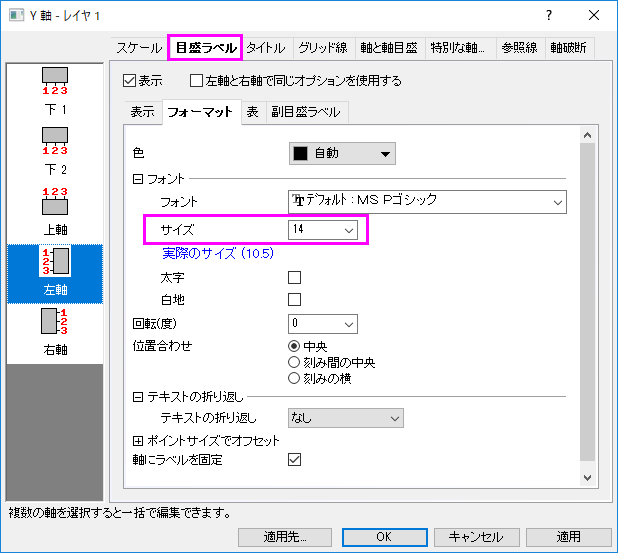
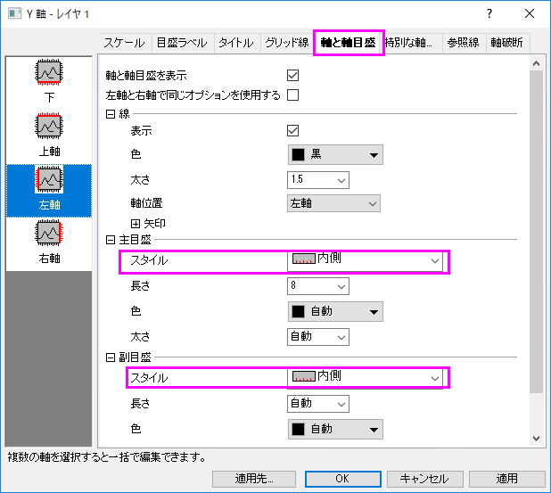
- プロットの上と右の軸を隠します：
キーボードのCTRLキーを押しながら、ダイアログの左のパネルで上と右の両方を選択し、軸と軸目盛タブで、軸と軸目盛を表示のチェックを外します。
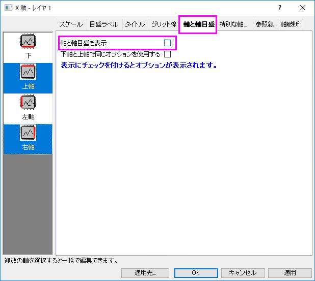
- OK をクリックして、これらの設定を適用します。
- 凡例を選択して、Deleteを押すと削除されます。グラフは次のようになります。
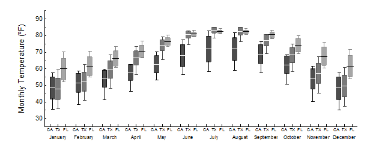
ボックスチャートにボックスの図形シンボルを追加
ボックスにあるそれぞれの線の意味をグラフィカルなシンボルで追加するには、つぎのステップを実行します：
- ワークブックUS Mean Temperatureをアクティブにし、下のワークシートのタグラベルで右クリックし、追加を選択して、ワークブックに新規のワークシートを追加します。
- 列Aのそれぞれの行に、1から5を入力します。
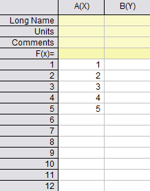
- 列Ａを選択して、メニューから作図：Statistical：ボックスを選択して、簡単にボックスチャートを作図します。
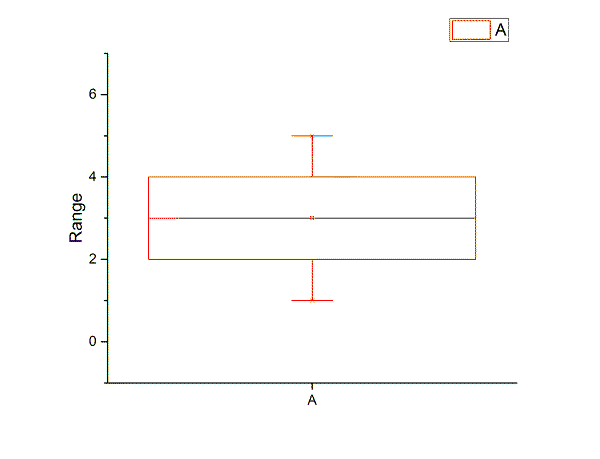
- プロット上でダブルクリックして、作図の詳細ダイアログを開きます。
- Graph2を選択し、印刷・ページサイズタブで、幅と高さを設定します。
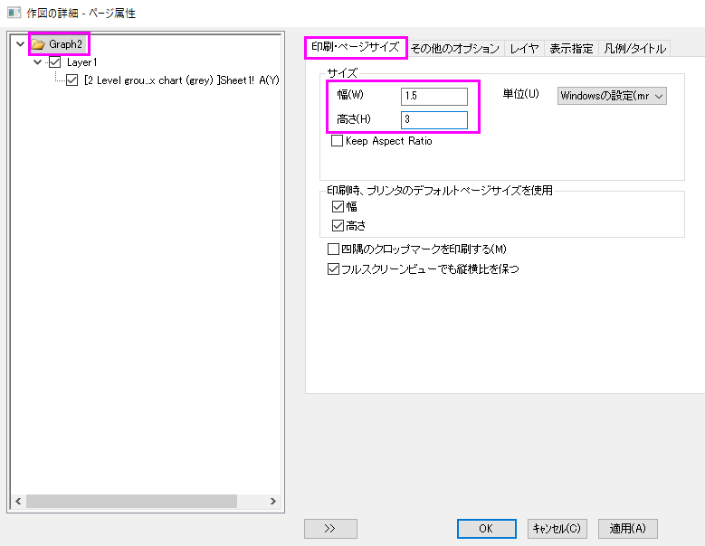
- Layer1の大きさを調整するには、レイヤの大きさ・描画スピードタブで、Layer1のサイズを設定します。
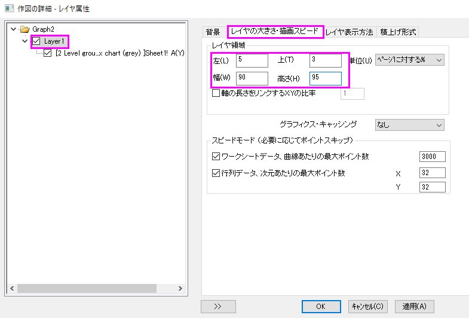
- ボックスに対しては、パターンタブで、次のように設定します。
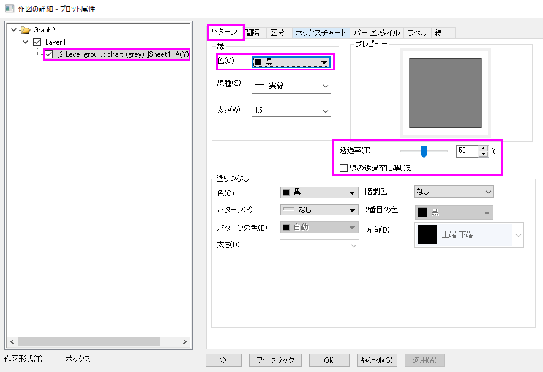
- パーセンタイルと線タブに移動し、グループボックスチャートGraph1と同じ設定を選択します。
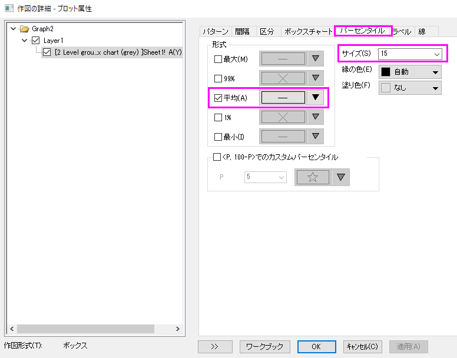
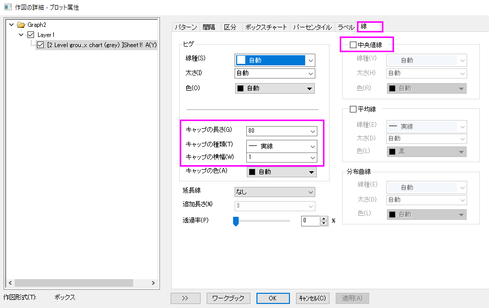
- ボックスチャートタブに移動し、ボックスラベル、ヒゲラベル及び 平均値ラベル、パーセンタイルに表示されているもの前にあるボックスにチェックを入れます。さらにボックスの幅を20％に変更して、ボックスとヒゲの範囲を設定します。
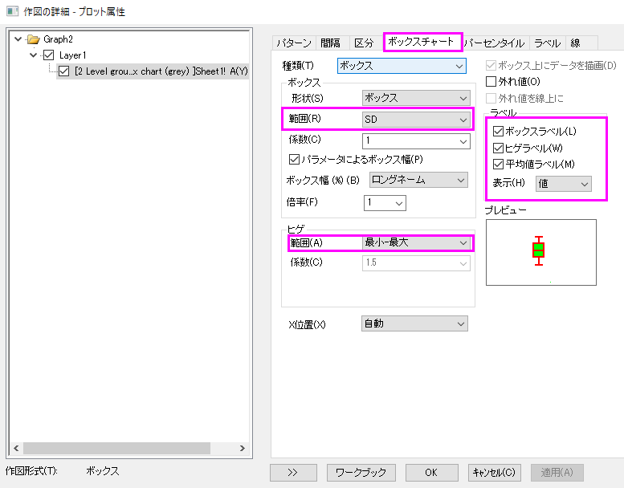
- OK をクリックして、これらの設定を適用します。
- Graph2の、X軸、Y軸、Y軸タイトル、範囲、凡例を選択して削除します。
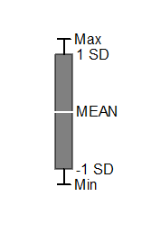
- Graph2でキーボードのCtrlキー+Cを押し、その後、Ctrl+VをGraph1で押し、ボックスチャートにグラフィカルなシンボルをコピーします。
- Graph1のグラフィカルシンボルを選択し、サイズと位置を整えます。
最終的なグラフが作成されます。
-